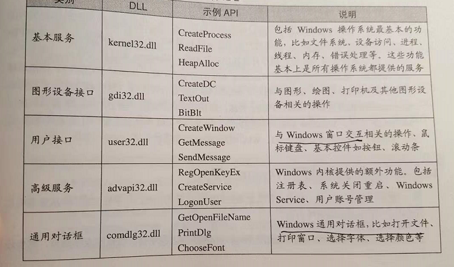

PE 的含义。
微软将它的可执行文件格式命名为“Portable Executable”，从字面意义上讲是希望这个可执行文件格式能够在不同版本的Windows平台上使用，并且可以支持各种CPU。比如从Windows NT、Windows 95到Windows XP及Windows Vista，还有Windows CE都是使用PE可执行文件格式。不过可惜的是Windows的PC版只支持x86的CPU，所以我们几乎只要关注PE在x86上的各种性质就行了。
PE 跟 ELF 都是基于段的结构。
Visual C++ 对 C/C++ 做了一些扩展，/Za 可以禁用。
VISUAL C++有一些C和C++语言的专有扩展，这些扩展并没有定义ANSI C标准或ANSI C++标准，具体可以参阅MSDN的Microsoft Extensions to C and C++这一节。“/Za”参数禁用这些扩展，使得我们的程序跟标准的C/C++兼容，这样可以尽量地看到问题的本质。
可执行文件为什么称为映像文件。
映像（Image）：因为PE文件在装载时被直接映射到进程的虚拟空间中运行，它是进程的虚拟空间的映像。所以PE可执行文件很多时候被叫做映像文件（Image File）。
atexit 函数的妙用。
atexit也是一个特殊的函数。atexit接受一个函数指针作为参数，并保证在程序正常退出（指从main里返回或调用exit函数）时，这个函数指针指向的函数会被调用。例如：
Entry Point 。
运行这些代码的函数称为入口函数或入口点（Entry Point），视平台的不同而有不同的名字。程序的入口点实际上是一个程序的初始化和结束部分，它往往是运行库的一部分。一个典型的程序运行步骤大致如下：
标准库的底层实现。
运行库是平台相关的，因为它与操作系统结合得非常紧密。C语言的运行库从某种程度上来讲是C语言的程序和不同操作系统平台之间的抽象层，它将不同的操作系统API抽象成相同的库函数。比如我们可以在不同的操作系统平台下使用fread来读取文件，而事实上fread在不同的操作系统平台下的实现是不同的，但作为运行库的使用者我们不需要关心这一点。虽然各个平台下的C语言运行库提供了很多功能，但很多时候它们毕竟有限，比如用户的权限控制、操作系统线程创建等都不是属于标准的C语言运行库。于是我们不得不通过其他的办法，诸如绕过C语言运行库直接调用操作系统API或使用其他的库。Linux和Windows平台下的两个主要C语言运行库分别为glibc（GNU C Library）和MSVCRT（Microsoft Visual C Run-time），我们在下面将会分别介绍它们。
事实上glibc除了C标准库之外，还有几个辅助程序运行的运行库，这几个文件可以称得上是真正的“运行库”。它们就是/usr/lib/crt1.o、/usr/lib/crti.o和/usr/lib/crtn.o。
为了满足类似的需求，运行库在每个目标文件中引入两个与初始化相关的段“.init”和“.finit”
当然我们也可以使用“attribute((section(“.init”)))”将函数放到.init段里面，但是要注意的是普通函数放在“.init”是会破坏它们的结构的，因为函数的返回指令使得_init()函数会提前返回，必须使用汇编指令，不能让编译器产生“ret”指令。
.drective 段的作用。
它会在编译时根据编译选项，在目标文件的“.drectve”段（还记得第2章中的DIRECTIVE吧？）相应的C++标准库链接信息。
/MT 跟 /MD 混合的情况。
但是，如果程序涉及动态链接CRT，这就比较复杂了。因为不同的目标文件如果依赖于不同版本的msvcrt.lib和msvcrt.dll，甚至有些目标文件是依赖于静态CRT，而有些目标文件依赖于动态CRT，那么很有可能出现的问题就是无法通过链接。链接器对这种情况的具体反应依赖于输入目标文件的顺序，有些情况下它会报符号重复定义错误：
printf 的线程安全。
（5）printf/fprintf及其他IO函数：流输出函数同样是线程不安全的，因为它们共享了同一个控制台或文件输出。不同的输出并发时，信息会混杂在一起。
TLS 线程局部变量。
多时候，开发者在编写多线程程序的时候都希望存储一些线程私有的数据。我们知道，属于每个线程私有的数据包括线程的栈和当前的寄存器，但是这两种存储都是非常不可靠的，栈会在每个函数退出和进入的时候被改变；而寄存器更是少得可怜，我们不可能拿寄存器去存储所需要的数据。假设我们要在线程中使用一个全局变量，但希望这个全局变量是线程私有的，而不是所有线程共享的，该怎么办呢？这时候就须要用到线程局部存储（TLS，Thread Local Storage）这个机制了。TLS的用法很简单，如果要定义一个全局变量为TLS类型的，只需要在它定义前加上相应的关键字即可。对于GCC来说，这个关键字就是__thread，比如我们定义一个TLS的全局整型变量：
显式TLS，pthread_key_create 跟 ST 协程那里特别类似。
在Windows平台上，系统提供了TlsAlloc()、TlsGetValue()、TlsSetValue()和TlsFree()这4个API函数用于显式TLS变量的申请、取值、赋值和释放；Linux下相对应的库函数为pthread库中的pthread_key_create()、pthread_getspecific()、pthread_setspecific()和pthread_key_delete()。
CreateThread()和_beginthread()有什么不同
我们知道在Windows下创建一个线程的方法有两种，一种就是调用Windows API CreateThread()来创建线程；另外一种就是调用MSVC CRT的函数beginthread()或beginthreadex()来创建线程。
sysenter 指令的具体内部实现。
关于使用sysenter指令进入内核之后是如何执行的，在这里就不占用篇幅详细介绍了，如果读者有兴趣,可以参考Intel的CPU指令手册，并且结合阅读Linux的内核源代码中关于sysenter的实现代码：/arch/i386/kernel/sysenter.c。
Windows API 大全。

字符串类型。
Windows 9x系统的内核是并不原生支持unicode的，因此它的系统调用涉及的字符串都是ANSI字符串，即参数都是使用char作为类型，比如与CreateFile这个API相对应的系统调用要传入一个文件名，那么这个字符串在最终传递给内核时应该是一个ANSI字符串。而Windows NT内核是原生支持unicode的，所有的系统调用涉及的字符串相关的参数都是unicode字符串，即参数是wchar_t类型的（wchar_t是一种双字节的字符类型）。那么同样的系统调用，所需要的字符串类型却不一样，这也会造成程序兼容性的问题。
link.exe 选项。
/DEBUG 选项。
动态链接库，重名会忽略。
由于存在这种重名符号被直接忽略的问题，当程序使用大量共享对象时应该非常小心符号的重名问题，如果两个符号重名又执行不同的功能，那么程序运行时可能会将所有该符号名的引用解析到第一个被加入全局符号表的使用该符号名的符号，从而导致程序莫名其妙的错误。
Windows 的 rundll32.exe 使用。
Windows系统中的EXE和DLL也是类似的区别，DLL也可以被当作程序来运行，Windows提供了一个叫做rundll32.exe的工具可以把一个DLL当作可执行文件运行。
ABI 兼容的情况
如果能够保证上述4种情况不发生，那么绝大部分情况下，C语言的共享库将会保持ABI兼容。注意，仅仅是绝大部分情况，要破坏一个共享库的ABI十分容易，要保持ABI的兼容却十分困难。很多因素会导致ABI的不兼容，比如不同版本的编译器、操作系统和硬件平台等，使得ABI兼容尤为困难。使用不同版本的编译器或系统库可能会导致结构体的成员对齐方式不一致，从而导致了ABI的变化。这种ABI不兼容导致的问题可能非常微妙，表面上看可能无关紧要，但是一旦发生故障，相关的Bug非常难以定位，这也是共享库很大的一个问题。
两种 编译器 传参的方式也会影响 ABI 兼容。不过对于 C 语言来说，是有 ABI 标准的。C 标准规定了 ABI 的方式。 C++ 标准没有规定 ABI 的方式。
共享库目录加载的优先级。
有了LD_LIBRARY_PATH之后，再来总结动态链接器查找共享库的顺序。动态链接器会按照下列顺序依次装载或查找共享对象（目标文件）： 由环境变量LD_LIBRARY_PATH指定的路径。 由路径缓存文件/etc/ld.so.cache指定的路径。 默认共享库目录，先/usr/lib，然后/lib。
LD_PRELOAD 预加载。
系统中另外还有一个环境变量叫做LD_PRELOAD，这个文件中我们可以指定预先装载的一些共享库甚或是目标文件。
LD_DEBUG 的妙用。打印动态装载过程。
LD_DEBUG还可以设置成其他值，比如： “bindings”显示动态链接的符号绑定过程。 “libs”显示共享库的查找过程。 “versions”显示符号的版本依赖关系。 “reloc”显示重定位过程。 “symbols”显示符号表查找过程。 “statistics”显示动态链接过程中的各种统计信息。
SO_NAME 的妙用。
如果我们不使用-soname来指定共享库的SO-NAME，那么该共享库默认就没有SO-NAME，即使用ldconfig更新SO-NAME的软链接时，对该共享库也没有效果。
-rpath 的妙用。
还有一种方法是使用链接器的“-rpath”选项（或者GCC的-Wl,-rpath），这种方法可以指定链接产生的目标程序的共享库查找路径。比如我们用如下命令行产生一个可执行文件： $ld –rpath /home/mylib –o program.out program.o –lsomelib 这样产生的输出可执行文件program.out在被动态链接器装载时，动态链接器会首先在“/home/mylib”查找共享库。